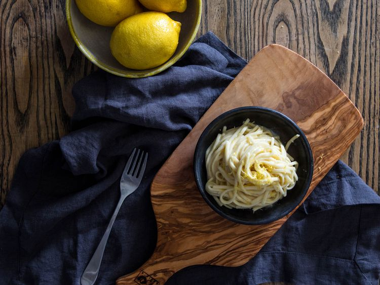

Pasta Al Limone
Homepage
Bright and fragrant citrus finds its way into this comforting bowl of spaghetti.

Ingredients
- 5 tablespoons (70 g) unsalted butter
- Finely grated zest of 1 lemon, plus fresh juice to taste and additional grated zest for serving
- 1 medium clove garlic, minced
- Kosher salt
- 1 pound (450 g) fresh spaghetti, store-bought or homemade
- 1 ounce (30 g) grated Parmigiano-Reggiano cheese, plus more for serving
- Freshly ground black pepper
Directions
- In a large skillet, melt butter over medium heat until foaming. Lower heat to low, add lemon zest and garlic, and cook, stirring, until fragrant, 1 to 2 minutes.
- Meanwhile, in a medium pot of boiling salted water, cook pasta until just shy of al dente. Reserve about 1 cup (240ml) of the starchy pasta water, then drain pasta.
- Add pasta to butter mixture, along with 1/2 cup (120ml) reserved pasta water. Increase heat to medium-high and cook, stirring and tossing to coat, until pasta is glazed in a satiny, emulsified sauce.
- Add grated cheese and toss and stir rapidly until sauce thickens; if it becomes too tight and dry at any time, add more pasta-cooking water to loosen it sufficiently. Add lemon juice to taste, starting with 1 tablespoon (15ml), then adding more until desired tartness is reached. Season with salt and pepper.
- Serve spaghetti right away, topping each serving with additional grated lemon zest and cheese.